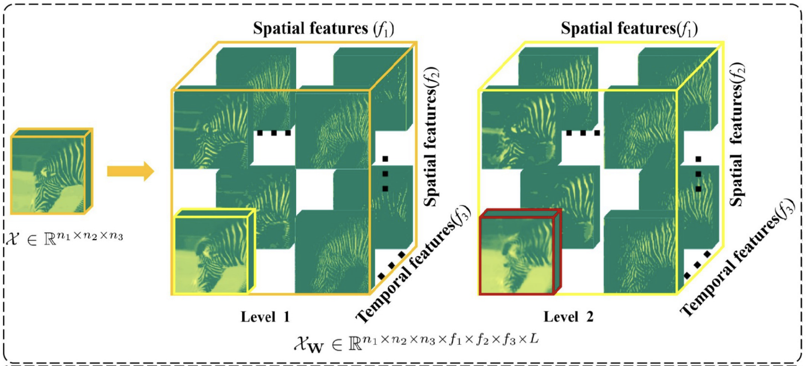
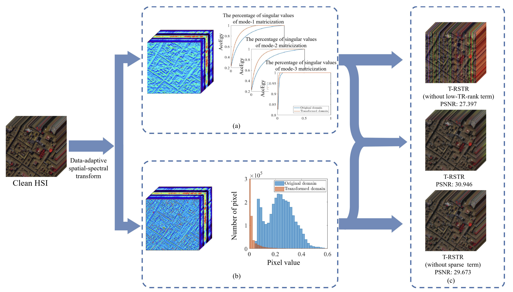
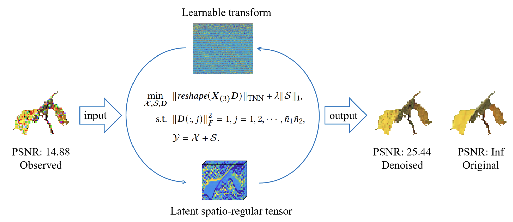
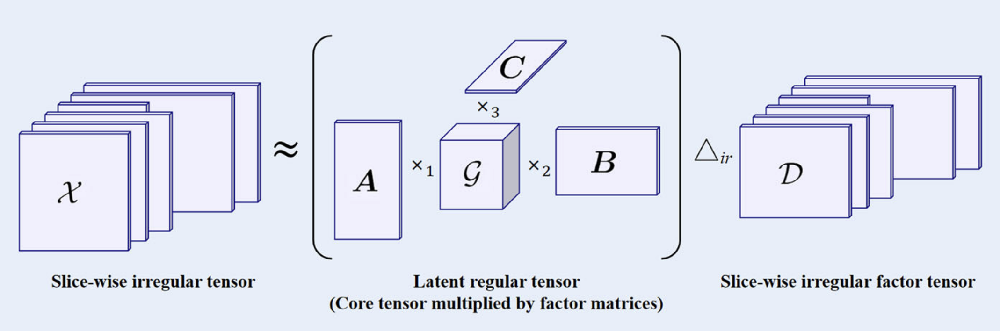
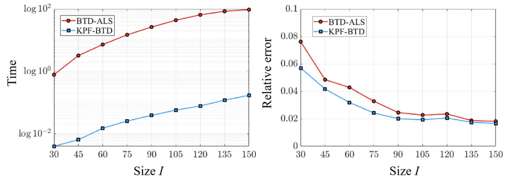
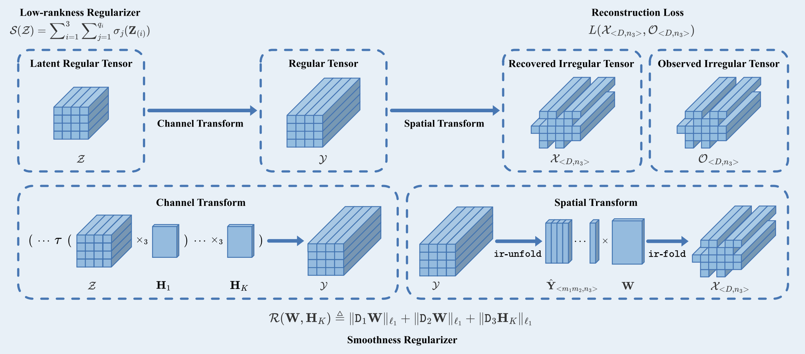

About Me
I am currently working with the School of Computing and Artificail Intelligence, Southwest Jiaotong University, Chengdu, China. I received the Ph.D. degree (advised by Prof. Ting-Zhu Huang and Prof. Xi-Le Zhao from the School of Mathematical Sciences, University of Electronic Science and Technology of China at 2024.12. My current interests include intelligent tensor representation and foundations, efficient algorithm designing, AI for life-science.
E-mail: aronzhangfy@163.com 学校主页: https://faculty.swjtu.edu.cn/zhanghao001
Self-motivated students are welcome to join my research group. Please feel free to contact me.
Experiences
-
2026.01-Current Assistant Professor, School of Computing and Artificail Intelligence, Southwest Jiaotong University, Co-Supervisor: Prof. Jiashu Zhang
-
2021.09 — 2025.12 PhD student，School of Mathematical Sciences, University of Electronic Science and Technology of China, Mathematics, Supervisor: Prof. Ting-Zhu Huang
-
2018.09 — 2021.07 Master student, School of Mathematical Sciences, University of Electronic Science and Technology of China, Mathematics, Supervisor: Prof. Xi-Le Zhao
-
2014.09—2018.07 Undergraduate student, College of Science, Sichuan Agricultural University, Information and Computing Science
Selected Papers
-

Hao Zhang, Xi-Le Zhao*, Tai-Xiang Jiang, Michael K. Ng, Ting-Zhu Huang, "Multiscale Feature Tensor Train Rank Minimization for Multidimensional Image Recovery", IEEE Transactions on Cybernetics, 2022, 52(12): 13395-13410 [PDF]
-

Hao Zhang, Ting-Zhu Huang*, Xi-Le Zhao*, Wei He, Jae Kyu Choi, Yu-Bang Zheng, "Hyperspectral Image Denoising: Reconciling Sparse and Low-Tensor-Ring-Rank Priors in the Transformed Domain", IEEE Transactions on Geoscience and Remote Sensing, 2023, 61: Art. no. 5502313 [PDF]
-

Hao Zhang, Ting-Zhu Huang*, Xi-Le Zhao*, Shuqin Zhang, Jin-Yu Xie, Tai-Xiang Jiang, Michael K. Ng, "Learnable Transform-Assisted Tensor Decomposition for Spatio-Irregular Multidimensional Data Recovery", ACM Transactions on Knowledge Discovery from Data, 2025, 19(1): Art. no. 1-23 [PDF]
-

Hao Zhang, Ting-Zhu Huang, Xi-Le Zhao, Lu-Bin Cui, Michael K. Ng, "Slice-Wise Irregular Tensor Decomposition and Its Application", Journal of Scientific Computing, 2025, 104: 48 [PDF]
-

Hao Zhang, Ting-Zhu Huang, Xi-Le Zhao*, Maolin Che, "A Fast Algorithm for Rank-(L, M, N) Block Term Decomposition of Multi-Dimensional Data", Journal of Scientific Computing, 2024, 101: 16 [PDF]
-

Jin-Yu Xie, Hao Zhang*, Xi-Le Zhao, Yi-Si Luo, "IRTF: A New Tensor Factorization for Irregular Multidimensional Data Recovery", Knowledge-Based Systems, 2025, 33: 114372 [PDF]
Grant
-
国家自然科学基金青年项目，12501649，主持，2026.01-2028.12
-
中国博士后科学基金面上项目，主持
Awards and Honors
-
Outstanding Student of UESTC (成电杰出学生)，2024
-
Outstanding Graduate Student of Sichuan Province (四川省优秀毕业生)，2025
-
National Scholarship for Graduate Students (国家奖学金)，2020，2024
-
UESTC First-Class Academic Scholarship (学业一等奖学金)，2020，2022，2024
-
UESTC Academic Rookie (学术新秀)，2023